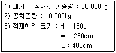
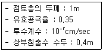
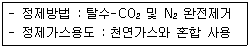
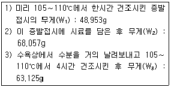
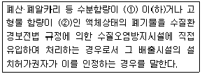

폐기물처리기사 (2004-05-23 기출문제)
1과목: 폐기물 개론
1. 쓰레기 선별 중 밀도차 선별방법과 가장 거리가 먼 것은?
- 풍력선별
- 스토너(stoner)
- 스크린선별
- 중액식선별
(정답률: 알수없음)

2. Pipe-line수송방법에 관한 설명으로 알맞지 않은 것은?
- 가설후 경로 변경이 곤란하다.
- 쓰레기 발생밀도가 높은 곳은 적용이 곤란하다.
- 장거리 이용이 곤란하다.
- 투입구를 이용한 범죄나 사고의 위험이 있다.
(정답률: 알수없음)
3. 적환장을 이용한 수집,수송에 관한 설명으로 알맞지 않은 것은?
- 소형의 차량으로 폐기물을 수거하여 대형차량에 적환후 수송하는 시스템이다.
- 처리장이 원거리에 위치할 경우에 적환장을 설치한다
- 적환장은 수송차량에 싣는 방법에 따라서 직접부림,간접부림등 크게 두가지로 구별된다.
- 적환장 설치장소는 개별적 고형물 발생지역의 하중 중심에 되도록 가까운 곳이 알맞다.
(정답률: 알수없음)
4. 다음 조건일때 차량적재 계수는? (단, 폐기물의 비중은 1ton/m3이다.)

- 1.27 t/m3
- 0.67 t/m3
- 0.45 t/m3
- 0.27 t/m3
(정답률: 알수없음)
5. 파쇄장치중 전단식 파쇄기에 관한 설명으로 틀린 것은?
- 고정칼이나 왕복칼 또는 회전칼을 이용하여 폐기물을 절단한다
- 충격파쇄기에 비해 대체적으로 파쇄속도가 빠르다
- 충격파쇄기에 비해 이물질의 혼입에 대하여 약하다
- 파쇄물의 크기를 고르게 할 수 있다
(정답률: 알수없음)
6. 0.41ton/m3 의 밀도를 갖는 쓰레기 시료를 압축하여 밀도를 0.75ton/m3 으로 증가시켰다. 이때의 부피 감소율은?
- 38%
- 45%
- 66%
- 72%
(정답률: 알수없음)
7. 쓰레기의 성상분석 절차로 가장 알맞는 것은?
- 시료→ 전처리→ 물리적조성→ 밀도측정→ 건조→ 분류
- 시료→ 전처리→ 건조→ 분류→ 물리적조성→ 밀도측정
- 시료→ 밀도측정→ 물리적조성→ 건조→ 분류→ 전처리
- 시료→ 밀도측정→ 건조→ 분류→ 전처리→ 물리적조성
(정답률: 알수없음)
8. 쓰레기 발생량 예측방법 중 하나의 수식으로 각 인자들의 효과를 총괄적으로 나타내어 복잡한 시스템의 분석에 유용하게 적용할 수 있는 것은?
- 경향법
- 다중회귀모델
- 동적모사모델
- 인자분석모델
(정답률: 알수없음)
9. 쓰레기의 장기 예측 발생량을 수립하기 위한 인구추정 방법중 포화인구의 설정에 어려운 점은 있지만 도시의 인구 동태와 잘 일치하기 때문에 합리적인 추정법으로 이용되고 있는 방법은?
- 등차 증가법
- 등비 증가법
- 논리 추정법
- 지수 곡선법
(정답률: 알수없음)
10. 청소상태의 평가법중 가로의 청소상태를 기준으로 하는 지역사회 효과지수를 나타내는 것은?
- USI
- TUM
- CEI
- GFE
(정답률: 알수없음)
11. 최소 크기가 10cm인 폐기물을 2cm로 파쇄하고자 할 때 Kick's법칙에 의한 소요동력은 동일 폐기물을 4cm로 파쇄 할 때 소요되는 동력의 몇배인가? (단, n=1로 가정한다.)
- 1.68배
- 1.76배
- 1.86배
- 1.97배
(정답률: 알수없음)
12. 슬러지중 비중 0.86 인 휘발성 고형물이 6%, 비중 2.02인 잔류고형물의 함량이 20%일 때 이 슬러지의 비중은?
- 약 0.9
- 약 1.1
- 약 1.2
- 약 1.3
(정답률: 알수없음)
13. 3000000ton/year의 폐기물 수거에 4500명 인부가 종사한다면 MHT는? (단, 수거인부의 1일 작업 시간은 8시간, 1년 작업일수는 300일이다.)
- 1.2
- 2.4
- 3.6
- 4.8
(정답률: 알수없음)
14. 우리나라 쓰레기 수거형태 중 효율이 가장 나쁜 것은?
- 타종수거
- 손수레 문전수거
- 대형쓰레기통수거
- 블럭식 수거
(정답률: 알수없음)
15. 수소 15.0%, 수분 0.5% 인 중유의 고열 발열량이 10,500kcal/kg 일 때, 저위발열량은?
- 7,882 kcal/kg
- 8,893 kcal/kg
- 9,103 kcal/kg
- 9,687 kcal/kg
(정답률: 알수없음)
16. '손선별'에 관한 설명으로 틀린 것은?
- 선별의 정확도가 낮고 작업량이 떨어진다.
- 파쇄공정으로 유입되기 전에 폭발가능성이 있는 위험물질을 분류할 수 있다.
- 작업효율은 0.5ton/인-시간 정도이다.
- 9m/min이하의 속도로 이동하는 콘베이어 벨트의 한쪽 또는 양쪽에서 사람이 서서 선별한다.
(정답률: 알수없음)
17. 1일 폐기물 발생량이 2,000톤인 도시에서 6톤 덤프트럭으로 쓰레기를 투기장까지 운반하고자 한다. 이들의 하루 운전시간은 8시간, 운반거리는 2km, 왕복운반시간 10분, 적재시간 25분, 적하시간 10분이며 3대의 대기차량을 고려하면 모두 몇 대의 트럭이 필요한가?
- 20대
- 25대
- 30대
- 35대
(정답률: 알수없음)
18. 점토가 매립지의 차수막으로 적합하기 위한 기준과 가장 거리가 먼 것은?
- 액성한계 : 10% 이상
- 소성지수 : 10% 이상 30% 미만
- 투수계수 : 10-7㎝/sec 미만
- 점토 및 미사토 함유량 : 20% 이상
(정답률: 알수없음)
19. 다음의 지정폐기물 중 년중 발생량이 가장 많은 것은?
- 슬러지
- 폐유기용제
- 폐합성고분자화합물
- 분진
(정답률: 알수없음)
20. 고형분이 50%인 음식쓰레기 10t을 소각하기 위해 수분함량을 25%가 되도록 건조시켰다. 이 건조쓰레기의 중량은? (단, 쓰레기비중 1.0 기준)
- 6.7t
- 7.7t
- 8.7t
- 9.7t
(정답률: 알수없음)
2과목: 폐기물 처리 기술
21. 석회기초법은 석회와 함께 미세한 포졸란(Pozzloan)물질을 폐기물과 섞는 방법이다. 이 처리에서 가장 일반적으로 쓰이는 포졸란물질이 아닌 것은?
- slag
- sand
- fly ash
- cement-kiln dust
(정답률: 알수없음)
22. 연직차수막에 관한 설명으로 알맞지 않는 것은?
- 수직방향 차수층 존재시에 사용한다.
- 지하수 집배수시설이 불필요하다.
- 지하매설로서 차수성확인이 어렵다.
- 차수막 보강시공이 가능하다.
(정답률: 알수없음)
23. 퇴비화 장점이라 볼 수 없는 것은?
- 폐기물의 재활용
- 높은 비료가치
- 과정중 낮은 Energy 소모
- 낮은 초기시설 투자비
(정답률: 알수없음)
24. 다음의 조건에서 침출수 통과년수는?

- 약 10년
- 약 8년
- 약 6년
- 약 4년
(정답률: 알수없음)
25. 보통 포틀랜드 시멘트의 화학성분중 가장 많은 부분을 차지하고 있는 것은?
- 산화철(Fe2O3)
- 알루미나(Al2O3)
- 규산(SiO2)
- 석회(CaO)
(정답률: 알수없음)
26. 합성차수막의 재료중 High-density polyethylene에 관한 설명으로 틀린 것은?
- 유연하지 못하여 구멍 등 손상을 입을 우려 있음
- 화학물질에 대한 저항성이 약함
- 온도에 대한 저항성과 강도가 높음
- 접합상태가 양호함
(정답률: 알수없음)
27. 어느 도시에서 1일 쓰레기 발생량이 120톤이다. 이를 trench법으로 매몰하는데 압축율이 50%이고, trench의 깊이가 2.5m라면 1년간 부지면적은 얼마나 되겠는가? (단,발생쓰레기 밀도 600kg/m3, 도랑 점유율 60%이다.)
- 약 43,620m2
- 약 24,330m2
- 약 18,670m2
- 약 12,090m2
(정답률: 알수없음)
28. 매립지 입지선정절차중 '후보지 평가단계'에서 할 일과 가장 거리가 먼 것은?
- 현장조사(보링조사포함)
- 입지선정기준에 의한 후보지 평가
- 후보지 등급결정
- 경제성 분석
(정답률: 알수없음)
29. 토양오염 처리기술중 토양증기추출법에 대한 설명으로 틀린 것은?
- 증기압이 낮은 오염물은 제거효율이 낮다.
- 추출된 기체는 대기오염방지를 위해 후처리가 필요하다.
- 필요한 기계장치가 복잡하여 유지, 관리비가 많이 소요된다.
- 지반구조의 복잡성으로 총처리시간을 예측하기가 어렵다.
(정답률: 알수없음)
30. 토양의 현장처리기법 증 토양세척법의 주요인자와 가장 거리가 먼 것은?
- 오염물질의 증기압
- 지하수 차단벽의 유무
- 투수계수
- 분배계수
(정답률: 알수없음)
31. 오염토양의 정화 및 복원기술중 고형화, 안정화 기술의 종류가 아닌 것은?
- 고형분과 슬러지의 유리화 기술
- Plasma Arc 유리화
- X선에 의한 유기성폐기물 안정화
- 화학물질 첨가를 이용한 고형화
(정답률: 알수없음)
32. 슬러지처리를 하기 위해 위생처리장 활성슬러지(1% 농도) 80m3를 농축조에 넣어 농축한 결과 슬러지의 농도가 35,000mg/L가 되었다. 농축된 슬러지의 량(m3)은? (단, 슬러지비중은 1.0으로 가정함)
- 17
- 23
- 29
- 31
(정답률: 알수없음)
33. 시멘트 고형화방법중 연소가스 탈황시 발생된 슬러지처리에 주로 적용되는 것은?
- 시멘트기초법
- 석회기초법
- 포졸란첨가법
- 자가시멘트법
(정답률: 알수없음)
34. 수중의 탄화수소류의 활성탄 흡착에 대한 설명으로 틀린것은?
- 용해도가 낮은 물질이 흡착이 잘된다
- 극성이 큰 물질보다 작은 물질의 흡착율이 높다
- 수산기(OH-)가 있으면 흡착율이 낮아진다
- 불포화유기물 보다는 포화유기물이 흡착이 잘된다
(정답률: 알수없음)
35. 매립가스 발생에 관한 설명으로 가장 알맞는 것은?
- 폐기물의 메탄가스 발생잠재량은 0.5 - 1.0m3/kg정도이다.
- 매립가스는 확산과 압력차에 의하여 이동하므로 수직방향보다는 수평방향으로 이동하기 쉽다.
- 혐기성분해가 정상적(안정적)으로 진행되는 경우 메탄발생량은 이산화탄소 발생량보다 많다.
- 폐기물의 메탄발생 잠재량과 실제 매립지에서 발생되는 메탄가스 발생량과의 차이는 거의 없다.
(정답률: 알수없음)
36. 수은을 함유한 폐액처리방법으로 가장 알맞는 것은?
- 황화물침전법
- 열가수분해법
- 산화제에 의한 습식산화분해법
- 자외선 오존 산화처리
(정답률: 알수없음)
37. 고형물 4.2%를 함유한 슬러지 120,000kg을 농축조로 이송 한다. 농축조에서 손실을 무시하고 소화조로 이송할 경우 슬러지의 무게가 80,000kg 일 때 농축된 슬러지의 고형물 함유율은? (단, 슬러지 비중은 1.0으로 가정함)
- 4.2%
- 5.8%
- 6.3%
- 7.6%
(정답률: 알수없음)
38. LFG(landfill gas)를 다음의 방법으로 정제하여 다음의 용도로 사용한다면 정제된 가스의 발열량 범위로 가장 적절한 것은?

- 2,140∼3,500 kcal/Nm3
- 4,500∼5,400 kcal/Nm3
- 5,850∼6,750 kcal/Nm3
- 8,640∼8,910 kcal/Nm3
(정답률: 알수없음)
39. 매립장에서 적용되고 있는 연직차수막 중 'Earth Dam의 코아'에 관한 설명으로 틀린 것은?
- 재료의 내구성: 무기질로서 내구성이 좋다.
- 적용지반: 투수층이 깊을 때 적용하기 좋다.
- 차수성: 차수효과가 좋으나 불투수성코아 시공시 압축정도에 따라 효과가 다르다.
- 재료: 코아용 불투수성 토양이 사용된다.
(정답률: 알수없음)
40. COD/TOC＜ 2.0, BOD/COD＜0.1인 고령화된 매립지에서 발생되는 침출수 처리에 가장 효과적인 처리방법은?
- 호기성공정
- 혐기성공정
- 화학적침전
- 역삼투(R/O)공정
(정답률: 알수없음)
3과목: 폐기물 소각 및 열회수
41. 다단로 소각로방식에 대한 설명으로 틀린 것은?
- 온도제어가 용이하고 동력이 적게들며 운전비가 저렴하다.
- 수분이 적고 혼합된 슬러지 소각에 적합하다.
- 가동부분이 많아 고장율이 높다.
- 24시간 연속운전을 필요로 한다.
(정답률: 알수없음)
42. 열분해공정이 갖는 단점이라 볼 수 없는 것은?(단, 소각공정과 비교 )
- 반응이 활발치 못하다.
- 환원성분위기로 Cr+3가 Cr+6로 전환되지 않는다.
- 흡열반응이므로 외부에서 열을 공급시켜야 한다.
- 반응생성물을 연료로서 이용하기 위해서는 별도의 정제장치가 필요하다.
(정답률: 알수없음)
43. 열분해방법이 소각방법에 비교해서 공해물질 발생면에서 유리한 점이라 볼 수 없는 것은?
- 중금속의 최소부분만이 재(ash)속에 고정되며 나머지는 쉽게 분리된다.
- 대기로 방출되는 가스가 적다.
- 고온용융식을 이용하면 재를 고형화할 수 있고 중금속의 용출은 없어서 자원으로서 활용할 수 있다.
- 배기가스중 질소산화물, 염화수소의 양이 적다.
(정답률: 알수없음)
44. 소각시 탈취방법인 촉매법과 연소법(직접,가열)에 관한 내용으로 알맞지 않은 것은?
- 직접연소법: 연소장치 설계시 오염물의 폭발한계점 또는 인화점을 잘 알아야 한다.
- 직접연소법: HC,H2,NH3,HCN 및 유독성가스의 제거법으로 사용한다.
- 촉매연소법:촉매를 사용하여 연소에 필요한 활성화에너지를 낮춤으로서 연소가 효과적으로 일어난다.
- 촉매연소법: 처리대상 가스의 제한은 없으나 저농도의 유해물질에는 적합치 않다.
(정답률: 알수없음)
45. 탄소함유율이 50wt% 와 불연분 50wt%인 고형폐기물 100kg을 완전연소시킬 때 필요한 이론 공기량(Sm3)은?
- 약 93
- 약 256
- 약 445
- 약 577
(정답률: 알수없음)
46. 화격자로 이루어져있는 스토커의 연소방식과 특징에 대한 설명으로 알맞지 않는 것은?
- 병렬요동식 스토커: 비교적 강한 교반력과 이송력을 갖고 있고 냉각효과가 좋으나 화격자의 눈이 자주 메꾸어지는 단점이 있다.
- 역동식 스토커: 같은 스토커상에서 건조,연소 및 후연소가 연속적으로 일어나며 쓰레기의 교반이나 연소조건이 양호하고 화격자가 자기 스스로 청정작용도 하며 소각율이 대단히 높다.
- 이상(移床)식 스토커: chain link에 화격자를 무한 궤도형으로 설치한 구조로 되어 있어서 쓰레기의 이송은 틀림없이 잘 이루어지지만, 반면 연소에 필요한 쓰레기층의 반전기능이 없는 것이 단점이다.
- 회전 로라식 스토커: 대체로 고질 쓰레기의 소각에 적합하다.
(정답률: 알수없음)
47. 용적밀도가 600kg/m3인 폐기물을 처리하는 소각로에서 질량감소율은 85%이고 부피감소율은 90%이었을 경우 이 소각로에서 발생하는 소각재의 용적밀도는?
- 600kg/m3
- 700kg/m3
- 800kg/m3
- 900kg/m3
(정답률: 알수없음)
48. 프라스틱 처리에 가장 유리한 소각방식은?
- Grate 방식
- 고정상방식
- 로타리킬른 방식
- stoker 방식
(정답률: 알수없음)
49. 메탄의 저위발열량이 8540kcal/Sm3 이라면 고위발열량은? (단, 수증기의 응축열이 480kcal/Sm3 )
- 9500 (kcal/Sm3)
- 9020 (kcal/Sm3)
- 8060 (kcal/Sm3)
- 7580 (kcal/Sm3)
(정답률: 알수없음)
50. 연료를 이론산소량으로 완전연소시켰을 경우의 이론연소온도는 몇 ℃인가? (단, 발열량 5000㎉/Sm3, 이론연소가스량 10Sm3/Sm3 연소가스평균정압비열 0.35㎉/Sm3℃,실온25℃이다.)
- 1012
- 1454
- 1750
- 2356
(정답률: 알수없음)
51. 열교환기중 '절탄기'에 관한 설명으로 적절치 않는 것은?
- 연도에 설치한다.
- 급수온도가 낮을 경우, 연도가스 온도가 저하하면 절탄기 저온부에 접하는 가스온도가 노점에 달하여 절탄기를 부식시키는 것을 주의하여야 한다.
- 연료의 착화와 연소를 양호하게 하고 연소온도를 높이는 효과가 있다.
- 연도의 가스온도의 저하로 인한 굴뚝의 통풍력의 감소등을 주의하여야 한다.
(정답률: 알수없음)
52. 소각할 쓰레기의 량이 20,000kg/day이다. 1일 10시간 소각로를 가동시키고 화격자의 면적이 7.25m2일 경우 이 쓰레기 소각로의 소각능력은?
- 106 kg/m2- hr
- 206 kg/m2- hr
- 276 kg/m2- hr
- 376 kg/m2- hr
(정답률: 알수없음)
53. 석탄의 탄화도가 증가하면 감소하는 것은?
- 고정탄소
- 착화온도
- 발열량
- 매연발생률
(정답률: 알수없음)
54. 절대온도의 눈금은 어느 법칙에서 유도된 것인가?
- Raoult의 법칙
- Henry의 법칙
- 에너지보존의 법칙
- 열역학 제2법칙
(정답률: 알수없음)
55. 폐기물의 이송방향과 연소가스의 흐름방향에 따라 소각로를 분류한다면 폐기물의 발열량이 상당히 높은 경우에 사용하기 가장 적절한 소각로 방식은?
- 교차류식 소각로
- 역류식 소각로
- 2회류식 소각로
- 병류식 소각로
(정답률: 알수없음)
56. 중량비로 탄소 70%, 수소 15%, 황 15%인 액체연료를 연소한 경우 최대탄산가스량(CO2 max(%))는?
- 11.3
- 12.1
- 13 .2
- 14.8
(정답률: 알수없음)
57. 폐기물의 소각을 위해 원소분석을 한 결과, 가연성 폐기물 1kg당 C: 30.5%, H: 10%, O: 20%, S: 3%, 수분 15%, 나머지는 재로 구성된 것으로 나타났다. 이 폐기물을 공기비 1.3으로 연소시킬 경우 발생하는 습윤연소가스량 (Sm3/kg)은?
- 약 6.3
- 약 6.8
- 약 7.1
- 약 7.8
(정답률: 알수없음)
58. 어느 폐기물을 연소처리하고자 한다. 함유성분이 다음과 같을 때 폐기물의 고위발열량은? (단, 함수율:29%, 불활성분:14%, 탄소:26%, 수소:6%, 산소:24%, 유황:1% , Dulong식 사용 )
- 약 2,300kcal/kg
- 약 2,700kcal/kg
- 약 3,200kcal/kg
- 약 3,700kcal/kg
(정답률: 알수없음)
59. 폐기물 소각 보일러에 Na2SO3(MW=126)을 가하여 공급수중의 산소를 제거한다. 이때 반응식은 2Na2SO3+O2→ 2Na2SO4이다. 보일러 공급수 1500톤에 산소함량 8mg/ℓ 일 때 이 산소를 제거하는데 필요한 Na2SO3의 이론량은?
- 약 86kg
- 약 95kg
- 약 103kg
- 약 125kg
(정답률: 알수없음)
60. 어떠한 종류의 폐기물도 열분해 시킬 수 있는 장점이 있는 반면에 주입되는 폐기물의 입자가 작아야 하며 주입량도 그다지 크지 못한 단점이 있는 열분해장치는?
- 유동상 열분해장치
- 고정상 열분해장치
- 미립상 열분해장치
- 부유상 열분해장치
(정답률: 알수없음)
4과목: 폐기물 공정시험기준(방법)
61. [ ( ① )에 소량의 ( ② )를 가한 용액에 흡수셀을 담가 놓고 필요하면 40∼50℃로 약 10분간 가열한다.] 위의 내용은 흡광광도법에서 사용되는 흡수셀의 세척방법에 대한 내용이다. ( )안에 알맞는 것은?(단, ① - ② 순서임)
- 중크롬산나트륨용액(2W/V%) - 과산화수소수(1+2)
- 탄산나트륨용액(2W/V%) - 과산화수소수(1+2)
- 중크롬산나트륨용액(2W/V%) - 음이온계면활성제
- 탄산나트륨용액(2W/V%) - 음이온계면활성제
(정답률: 알수없음)
62. 고상폐기물의 pH 측정방법으로 가장 알맞는 설명은?
- 시료 5g과 증류수 25 mL를 잘 교반하여 10분 이상 방치후 이 현탁액을 검액으로 함
- 시료 5g과 증류수 25 mL를 잘 교반하여 30분 이상 방치후 이 현탁액을 검액으로 함
- 시료 10g과 증류수 25 mL를 잘 교반하여 10분 이상 방치후 이 현탁액을 검액으로 함
- 시료 10g과 증류수 25 mL를 잘 교반하여 30분 이상 방치후 이 현탁액을 검액으로 함
(정답률: 알수없음)
63. 폐기물 중에 포함된 수분과 고형물를 정량하고자 실험을 하였는데 그 결과는 다음과 같다. 수분함량과 고형물 함량은 각각 몇 %인가?(단, 수분함량-고형물함량순서)

- 25.82%, 74.18%
- 74.18%, 25.82%
- 34.80%, 65.20%
- 65.20%, 34.80%
(정답률: 알수없음)
64. 흡광광도 분석장치에 관한 사항이다. 옳은 것은?
- 근적외부의 광원으로는 주로 중수소방전관을 사용한다.
- 가시부의 광원으로는 주로 중수소방전관을 사용한다.
- 자외부의 광원으로는 주로 중수소방전관을 사용한다.
- 파장의 선택을 위한 단색화장치는 색유리, 젤라핀등을 사용된다.
(정답률: 알수없음)
65. 총칙에서 규정하고 있는 내용 중 틀린 것은?
- 표준온도는 0℃, 찬곳은 0∼15℃, 열수는 80℃이상, 냉수는 4℃이하를 말한다.
- '약'이라 함은 기재된 양에 대하여 10% 이상의 차가 있어서는 안된다.
- '정확히 단다'라 함은 규정된 양의 검체를 취하여 분석용 저울로 0.1 mg까지 다는 것을 말한다.
- 액체의 산성, 알카리성 또는 중성을 검사할 때는 따로 규정이 없는 한 유리전극에 의한 pH미터로 측정한다.
(정답률: 알수없음)
66. 공정시험방법에서의 용출시험방법 중 진탕회수와 진탕 시간으로 적절한 것은?
- 진탕회수: 매분당 약 100회, 진탕시간: 4시간 연속
- 진탕회수: 매분당 약 200회, 진탕시간: 6시간 연속
- 진탕회수: 매분당 약 300회, 진탕시간: 8시간 연속
- 진탕회수: 매분당 약 400회, 진탕시간: 10시간 연속
(정답률: 알수없음)
67. 순수한 물 1000 mL에 비중이 1.18인 염산 100mL를 혼합하였을 때, 염산의 W/V% 농도는?
- 10.55
- 10.61
- 10.73
- 10.86
(정답률: 알수없음)
68. ['정량범위'라 함은 시험방법에 따라 시험할 경우 표준 편차율 ( )에서 측정할 수 있는 정량하한과 정량 상한의 범위를 말한다] ( )안에 알맞는 내용은?
- 1.0% 이하
- 3% 이하
- 5% 이하
- 10% 이하
(정답률: 알수없음)
69. 총칙의 내용 중 용기에 관하여 잘못 설명된 것은?
- '밀폐용기'라 함은 취급 또는 저장하는 동안에 이물이 들어가거나 또는 내용물이 손실되지 아니하도록 보호하는 용기
- '기밀용기'라 함은 취급 또는 저장하는 동안에 밖으로 부터의 공기 또는 다른 가스가 침입하지 아니하도록 내용물을 보호하는 용기.
- '밀봉용기'라 함은 취급 또는 저장하는 동안에 기체 또는 미생물이 침입하지 아니하도록 내용물을 보호하는 용기
- '차광용기'라 함은 광선이 투과하지 않는 용기 또는 투과하지 않게 포장하여 취급 또는 저장하는 동안에 내용물이 생화학적 변화를 일으키지 못하도록 방지하는 용기
(정답률: 알수없음)
70. 가스크로마토그래프 전자포획형 검출기(ECD)에 의해 선택적으로 검출할 수 있는 화합물로 가장 적절한 것은?
- 유기할로겐화합물
- 유기인화합물
- 유황화합물
- 유기질소화합물
(정답률: 알수없음)
71. Na+, K+, NH4+에 대한 이온을 이온전극에 의해 측정하고자 할 때 사용하는 전극의 종류는?
- 유리막 전극
- 고체막 전극
- 격막형 전극
- 유화막 전극
(정답률: 알수없음)
72. 강열감량시험에서 사용하는 전기로의 온도(℃), 강열시간(분), 첨가되는 용액의 종류가 모두 바르게 짝지어진 것은?(단, 도가니 또는 접시를 미리 강열하는 경우 제외)
- 550± 25℃, 120분, 질산암모늄
- 550± 50℃, 120분, 황산암모늄
- 600± 25℃, 180분, 질산암모늄
- 600± 50℃, 180분, 황산암모늄
(정답률: 알수없음)
73. 휘발성 저급 염소화탄화수소류는 가스크로마토그래피법을 이용하여 측정한다. 이때 사용하는 운반가스는?
- 아르곤
- 산소
- 수소
- 질소
(정답률: 알수없음)
74. 가스크로마토그래피법에서 가스유로계에 관한 설명으로 틀린 것은?
- 유량조절부는 압력조절밸브, 유량조절기 그리고 필요에 따라 유량계가 설치되어 있다.
- 유량조절기를 갖는 장치는 유량조절기의 일차측 압력을 일정하게 유지해 주어야 하며 배관의 재료는 내면이 깨끗한 금속이어야 한다.
- 분리관유로는 시료도입부, 분리관, 검출기기배관으로 구성된다.
- 이온화 검출기나 다른 검출기를 사용할 때 필요한 연소용가스, 청소가스 기타 필요한 가스의 유로에는 통합조절기구를 설치하여 조절한다.
(정답률: 알수없음)
75. 함수율이 93%인 시료의 용출시험 결과를 보정하기 위해 곱하여야 하는 값은 얼마인가?
- 1.14
- 2.14
- 3.14
- 4.14
(정답률: 알수없음)
76. 흡광광도법에서 파장눈금의 교정에 사용하는 광원의 종류가 아닌 것은?
- 수소방전관
- 중수소방전관
- 석영저압수은방전관
- 중공음극방전관
(정답률: 알수없음)
77. 공정시험법 중 금속이온의 정량시험인 흡광광도법에서 디티존 사염화탄소 용액으로 추출하지 않는 것은?
- 납(Pb)
- 카드뮴(Cd)
- 수은(Hg)
- 크롬(Cr)
(정답률: 알수없음)
78. 흡광광도법을 이용한 6가크롬의 측정에 관한 설명으로 알맞지 않은 것은?
- 6가크롬에 디페닐카르바지드를 작용시켜 생성되는 적자색의 착화합물의 흡광도를 측정한다.
- 정량범위는 0.002~0.⑤mg이고 표준편차는 3~10%이다.
- 시료중에 잔류염소가 공존하면 발색을 방해한다.
- 시료중 3가크롬이 다량 포함되어 있을 경우는 수산화나트륨용액으로 PH 12이상으로 조절한다.
(정답률: 알수없음)
79. 중금속 분석의 전처리인 질산-과염소산법에 있어, 질산이 공존하지 않는 상태에서 과염소산을 넣을 경우 어떤 문제가 발생될 수 있는가?
- 킬레이트형성으로 분해 효율이 저하됨
- 급격한 가열반응으로 휘산됨
- 폭발 가능성이 있음
- 중금속의 응집침전이 발생함
(정답률: 알수없음)
80. 비소시험법에서 비화수소 발생장치의 반응용기에 무엇을 넣어 비화수소를 발생시키는가?
- 아연(Zn) 분말
- 알루미늄(Al) 분말
- 철(Fe) 분말
- 비스미스(Bi) 분말
(정답률: 알수없음)
5과목: 폐기물 관계 법규
81. 폐기물처리업에 대한 설명으로 맞지 아니한 것은?
- 폐기물처리업의 업종은 수집· 운반업, 중간처리업, 최종처리업, 종합처리업이 있다.
- 폐기물중간처리업자는 폐기물수집,운반업의 허가를 받지 않고 그 처리대상폐기물을 스스로 수집,운반 할 수 있다.
- 감염성폐기물의 수집,운반 또는 처리업자는 다른 폐기물과 분리하여 별도로 운반,수집,처리하는 시설 장비 및 사업장을 설치.운영하여야 한다.
- 사업장 폐기물수집· 운반업의 경우에 한하여 영업 구역을 제한할 수 있다.
(정답률: 알수없음)
82. 다음은 관리형 매립시설의 침출수에 대한 청정지역 배출허용기준을 나타낸 것으로 적절한 것은?(단, 침출수원수의 화학적산소요구량은 4000mg/L 이하 )
- BOD : 50mg/ℓ 이하
- COD(KMnO4법) : 80mg/ℓ 이하
- COD(K2Cr2O7법) : 400mg/ℓ 이하
- SS : 50mg/ℓ 이하
(정답률: 알수없음)
83. 다음 중 지정폐기물을 운반시 폐기물 간이 인계서로 갈음 할 수 있는 경우로 알맞지 않는 것은?
- 폐산을 월 평균 200kg미만 배출되는 경우
- 오니를 월 평균 10톤 미만 배출하는 경우
- 폐농약을 월 평균 100kg 미만 배출하는 경우
- 종합병원외의 기관에서 감염성 폐기물을 배출하는 경우
(정답률: 알수없음)
84. 폐기물 소각처리시설의 설치· 운영자는 배출되는 오염물질의 측정결과를 보존해야 되는 기간은 몇 년인가?
- 1년
- 2년
- 3년
- 5년
(정답률: 알수없음)
85. 폐기물관리법에서 사용하는 용어의 정의 중 틀리게 기술한 것은?
- '생활폐기물'이라 함은 사업장 폐기물외의 폐기물을 말한다.
- '처리'라 함은 폐기물의 소각, 중화, 파쇄, 고형화 등에 의한 중간처리와 매립, 해역배출 등에 의한 최종처리를 말한다.
- '폐기물처리시설'이라 함은 폐기물의 중간처리시설, 과 최종처리시설, 재활용시설로서 환경부령이 정하는 시설을 말한다
- '사업장폐기물'이라 함은 대기환경보전법, 수질환경 보전법 또는 소음,진동규제법의 규정에 의하여 배출시설을 설치, 운영하는 사업장 기타 대통령령이 정하는 사업장에서 발생되는 폐기물을 말한다.
(정답률: 알수없음)
86. 방치폐기물의 처리를 폐기물처리공제조합에 명할 수 있는 방치폐기물 처리량으로 적절한 기준은? (단, 폐기물재활용신고자가 방치한 폐기물의 경우)
- 당해 폐기물재활용신고자의 폐기물보관량의 1.5배 이내
- 당해 폐기물재활용신고자의 폐기물보관량의 2배 이내
- 당해 폐기물재활용신고자의 폐기물보관량의 2.5배 이내
- 당해 폐기물재활용신고자의 폐기물보관량의 3배 이내
(정답률: 알수없음)
87. 다음은 기술관리인을 두어야 할 폐기물처리시설의 규모에 대한 내용이다. 틀린 것은?
- 멸균분해시설로서 시간당 처리능력이 200kg 이상인 시설
- 소각시설로서 시간당 처리능력이 600kg(감염성폐기물을 대상으로 하는 소각시설은 200kg)이상인 시설
- 압축· 파쇄· 분쇄 또는 절단시설로서 1일 처리능력이 100톤 이상인 시설
- 사료화· 퇴비화 또는 연료화시설로서 1일 처리능력이 5톤 이상인 시설
(정답률: 알수없음)
88. 폐기물처리업자에게 영업정지 처분을 명하고자 하는 경우 그 영업의 정지가 공익을 해할 우려가 있다고 인정되는 때에 영업의 정지에 갈음하여 부과할 수 있는 과징금의 최대액수는?
- 5천만원
- 1억원
- 2억원
- 3억원
(정답률: 알수없음)
89. [ 환경부장관 또는 시도지사는 폐기물처리공제조합에 방치폐기물의 처리를 명하는 때에는 주변환경의 오염 우려정도와 방치폐기물의 처리량등을 고려하여 ( ) 범위안에서 그 처리기간을 정하여야 한다 ] ( )안에 알맞는 내용은?
- 1월
- 2월
- 3월
- 6월
(정답률: 알수없음)
90. 기술관리인의 자격,준수사항,기술관리대행계약등에 관한 필요한 사항을 정하는 것은?
- 시,도지사령
- 유역환경청장령
- 환경부령
- 대통령령
(정답률: 알수없음)
91. 방치폐기물의 처리이행보증보험에 대한 다음 설명중 맞는 것은?
- 보험의 가입기간은 2년 이상 연단위로 하되 보증기간은 보험종료일에 60일을 가산한 기간으로 하여야 한다
- 보험의 가입기간은 2년 이상 연단위로 하되 보증기간은 보험종료일에 30일을 가산한 기간으로 하여야 한다
- 보험의 가입기간은 1년 이상 연단위로 하되 보증기간은 보험종료일에 60일을 가산한 기간으로 하여야 한다
- 보험의 가입기간은 1년 이상 연단위로 하되 보증기간은 보험종료일에 30일을 가산한 기간으로 하여야 한다
(정답률: 알수없음)
92. 폐기물감량화시설의 종류와 가장 거리가 먼 것은?
- 폐기물재활용시설
- 폐기물재이용시설
- 공정개선시설
- 폐기물 선별,분류시설
(정답률: 알수없음)
93. 폐기물처리시설을 설치, 운영하는 자가 당해 시설의 유지 관리에 대한 기술업무를 담당하게 하기 위한 기술관리인을 임명하지 하니하고 기술관리대행계약을 체결하지 않는 경우에 행정처분으로 알맞는 것은?
- 1년이하의 징역 또는 1천만원이하의 벌금에 처함
- 1천만원이하의 과태료에 처함
- 3백만원이하의 과태료에 처함
- 1백만원이하의 과태료에 처함
(정답률: 알수없음)
94. 다음 중 사후관리 이행보증금 및 사전적립금의 용도로 가장 알맞는 것은?
- 폐기물 처리시설설치 융자
- 차기매립지 계획, 설치비용 지원
- 공동처리하고자 하는 폐기물처리업자의 비용 지원
- 사후관리이행보증금 및 매립시설의 사후관리를 위한 사전적립금의 환불
(정답률: 알수없음)
95. 폐기물처리시설의 종류중 화학적 처리시설과 가장 거리가 먼 것은?
- 반응시설
- 응집, 침전시설
- 정제시설
- 고형화, 안정화시설
(정답률: 알수없음)
96. 환경부령이 정하는 폐기물처리시설의 설치를 완료한 자는 환경부령이 정하는 검사기관으로부터 검사를 받아야 한다 이 때 환경부령이 정하는 검사기관에 포함되지 않는 기관은? (단, 매립시설의 검사기관)
- 환경관리공단
- 한국건설기술연구원
- 농업기반공사
- 시,도 보건환경연구원
(정답률: 알수없음)
97. 폐기물처리시설의 사용을 종료하거나 폐쇄하고자 하는 자가 사용종료· 폐쇄신고서를 시· 도지사 또는 지방환경관서의 장에게 제출하여야 하는 신고기한으로 적절한 것은?
- 매립시설을 폐쇄할 경우: 폐쇄예정일 1월 이전
- 매립시설을 폐쇄할 경우: 폐쇄예정일 2월 이전
- 매립시설을 폐쇄할 경우: 폐쇄예정일 3월 이전
- 매립시설을 폐쇄할 경우: 폐쇄예정일 6월 이전
(정답률: 알수없음)
98. 폐기물처리시설외의 장소에서의 폐기물처리는 환경부령이 정하는 방법에 의해 아래 폐기물을 적정하게 처리할 수있다. ( )에 맞는 것은? (순서대로 ①, ②)

- 95%초과, 5%미만
- 90%이상, 5%미만
- 90%미만, 15%미만
- 85%초과, 15%미만
(정답률: 알수없음)
99. 지정폐기물(감염성폐기물 제외)의 수집, 운반을 하기 위한 차량 적재함에 명기하는 글씨의 색깔은?
- 적색
- 검은색
- 노란색
- 청색
(정답률: 알수없음)
100. 폐기물처리담당자 등이 이수하여야 할 교육과정으로 잘못된 것은?
- 사업장폐기물 배출자 과정
- 폐기물재활용 기술요원 과정
- 폐기물처리업 기술요원 과정
- 폐기물처리시설 기술담당자 과정
(정답률: 알수없음)